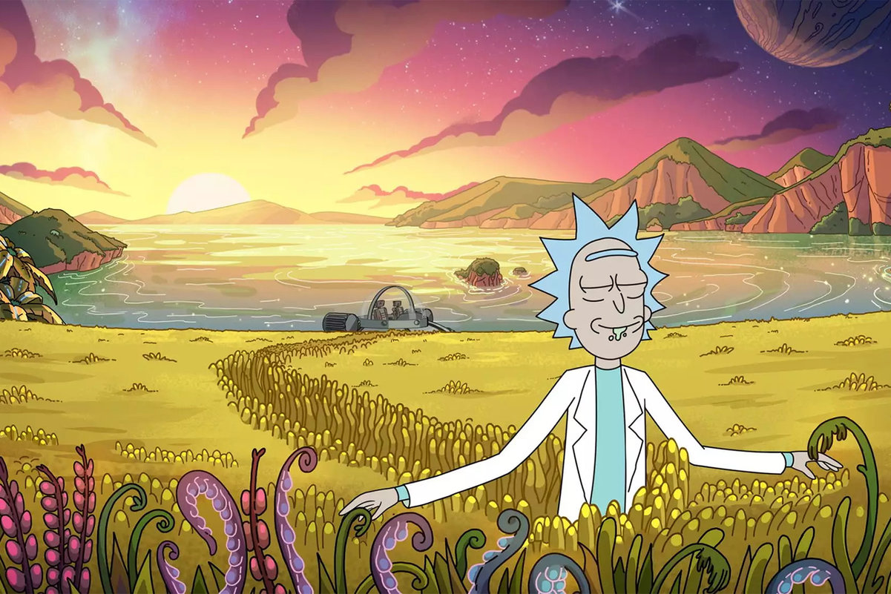

Alibek Sh


The Rick and Morty API
API Рика и Морти - это API REST (ish) и GraphQL, основанный на телевизионном шоу "Рик и Морти".
У вас будет доступ к сотням персонажей, изображений, мест и эпизодов.
API Рика и Морти заполнен канонической информацией, показанной в телешоу.
Weather
Погода — состояние тропосферы в данном месте в данное время.
Основные свойства погоды — изменчивость, многообразие и повторяемость.
Погода характеризуется совокупностью метеорологических элементов.